Un efecte és qualsevol acció en una imatge gràfica per a crear una altra imatge gràfica. Un dels efectes que sol trobar és l’efecte de desenfocament de moviment, efecte d’ombra paral·lela, etc.
Exemple d’efecte Motion Blur (desenfocament de moviment):
Efecte d’ombra paralel·la:
En JavaFX, es pot usar un efecte per a un objecte de tipus Node a través del mètode Node.setEffect (efecte).
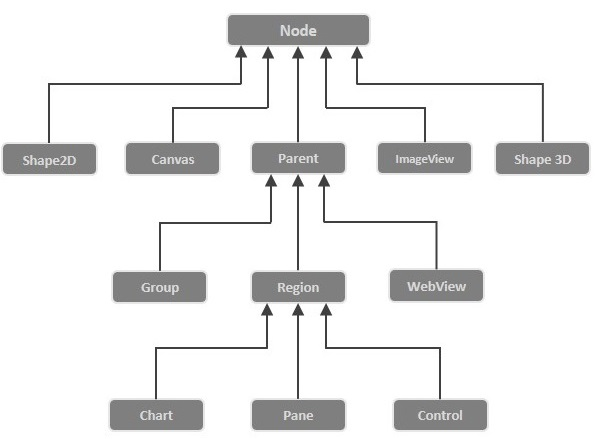
JavaFX ha creat algunes classes d’efectes, per a diferents efectes, tots els quals estan en el paquet javafx.scene.effect. A continuació hi ha algunes classes en aquest paquet.
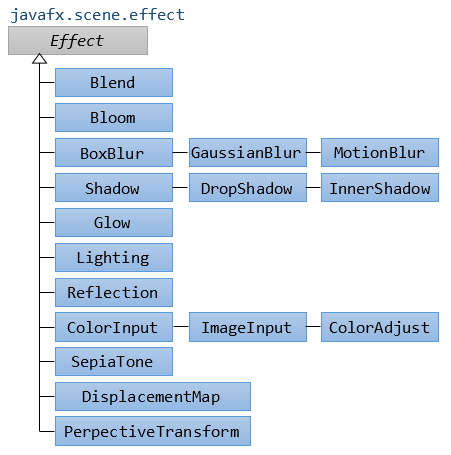
JavaFX proporciona un mètode anomenat setEffect() que ha de dir-se a través d’un objecte de node. Necessitem passar l’objecte de classe d’efecte a aquest mètode. Per a aplicar qualsevol efecte al node, hem de seguir els següents passos.
A continuació es mostra un efecte exemple amb cadascún dels efectes:
En general, el blend effect produeix l’eixida que es genera com a resultat de la mescla de dues o més nodes d’entrada diferents. Presa els píxels de dos o més nodes, els mescla segons la manera de fusió aplicat i produeix el node d’eixida en la mateixa ubicació.
Si les dues imatges se superposen, la manera de fusió s’aplica en l’àrea superposada de totes dues imatges.
Propietats
Constructors
Hi ha tres constructors en aquesta classe.
- **Blend ()**: crea una instància de la classe Blend amb els valors predeterminats.
- **Blend(BlendMode mode)**: instanciar la classe Blend amb la manera especificada
- **Blend(BlendMode mode, Effect BottomInput, Effect TopInput)**: crea una instància de la classe Blend amb la manera de fusió especificat, l'efecte d'entrada inferior i l'efecte d'entrada superior


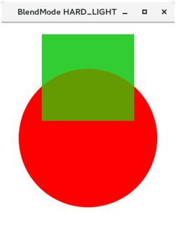
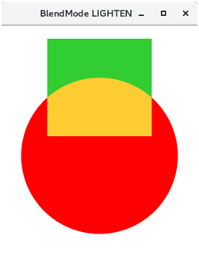
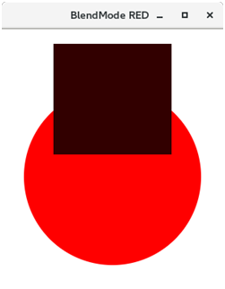

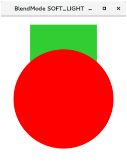

L’efecte Bloom s’usa per a il·luminar píxels d’algunes de les parts de l’escena. Està representat per la classe javafx.scene.effect.Bloom. Aquesta classe conté diverses propietats que es poden establir en uns certs valors per a aplicar els efectes apropiats.
Propietats
Constructors
La imatge mostra l’efecte bloom en el llindar predeterminat i en un llindar d’1.0.
El desenfocament són efectes comuns que es poden usar per a proporcionar més enfocament als objectes seleccionats. Amb JavaFX pot aplicar un quadre borrós, un desenfocament de moviment o un desenfocament gaussià.
JavaFX ens permet fer que els nodes es difuminen utilitzant els efectes de desenfocament de JavaFX. En general, el desenfocament fa que la imatge siga poc clara. JavaFX proporciona la classe javafx.scene.effect.BoxBlur que deu instanciarse per a aplicar l’efecte de desenfocament als nodes. El filtre Box s’utilitza en el cas de l’efecte BoxBlur en JavaFX.
Propietats:
Constructors
La Figura mostra dues mostres de text borrós.
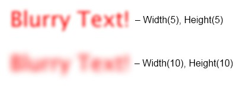
MotionBlur és similar a aquest efecte de desenfocament gaussià. L’efecte de desenfocament de moviment també s’usa per a desenfocar els nodes. L’única diferència entre l’efecte Desenfocament gaussià i l’efecte Desenfocament de moviment és que l’efecte de desenfocament de moviment utilitza l’angle especificat amb el qual es desenfocaran els nodes.
Com suggereix el seu nom, en aplicar aquest efecte, es veu que el node està en moviment. La classe javafx.scene.effect.MotionBlur representa l’efecte motionblur. S’ha de crear una instància d’aquesta classe per a generar l’efecte apropiat.
Propietats
Propietats
Constructors
L’efecte GaussianBlur és molt similar a aquest efecte BoxBlur. L’única diferència entre tots dos és que l’efecte GaussianBlur usa un kernel de convolució gaussià per a desenfocar els nodes. No obstant això, JavaFX proporciona la classe javafx.scene.effect.GaussianBlur per a implementar GaussianBlur en els nodes. S’ha de crear una instància d’aquesta classe per a aplicar un efecte apropiat en el node. Propietats
Propietat:
Constructors
JavaFX ens permet ajustar el color d’una imatge ajustant les propietats com el to, la saturació, la lluentor i el contrast del color de la imatge. La classe javafx.scene.effect.ColorAdjust conté diverses propietats i mètodes que es poden usar per a aplicar l’efecte ColorAdjust en el node.
Les propietats de la classe javafx.scene.effect.ColorAdjust juntament amb els seus mètodes d’establiment es descriuen a continuació. - setBrightness(double value): realitzada en la lluentor del color. És una propietat de doble tipus. - setContrast(double value) Ajust realitzat en contrast del color. - setHue(double value): Ajust de matís realitzat en tinte del color. - setInput(double value): Valor d’entrada per a l’efecte. - setSaturation(double value): Ajust realitzat en la saturació del color.
La classe conté dos constructors donats a continuació.
- **ColorAdjust()**: crea la nova instància de ColorAdjust amb els paràmetres predeterminats.
- **ColorAdjust(double hue, double saturation, double brightness, double contrast)**: crea la nova instància de ColorAdjust amb els paràmetres especificats.
ColorInput produeix una eixida similar a un rectangle acolorit. No mostra el node sinó el quadre rectangular. Es passa principalment als altres efectes com a entrada. La classe javafx.scene.effect.ColorInput representa l’efecte ColorInput. L’objecte d’aquesta classe es passa com a entrada per als altres efectes.
Propietats
Constructors
Igual que l’efecte Bloom, l’efecte Glow també s’usa per a il·luminar els píxels de la imatge. No obstant això, fa que la imatge siga molt més brillant. La classe javafx.scene.effect.Glow representa l’efecte Glow. La classe conté diverses propietats que es poden establir en uns certs valors per a aplicar l’efecte apropiat.
Propietats
Constructors
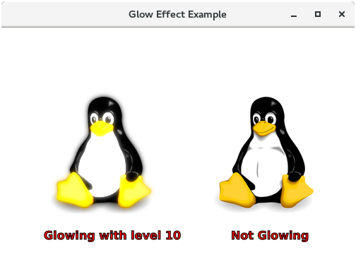
Aquest efecte s’utilitza principalment per a passar la imatge no modificada com a entrada per als altres efectes. La classe javafx.scene.effect.ImageInput representa l’efecte ImageInput. Aquesta classe conté diverses propietats que es poden establir en un determinat valor per a representar una imatge adequada.
Constructors
Com suggereix el seu nom, aquest efecte crea l’ombra del node duplicant el node i fent que les seues vores es tornen borrosos. La classe denominada javafx.scene.effect.Shadow representa l’efecte d’ombra. Només necessitem crear una instància d’aquesta classe per a generar un efecte d’ombra apropiat.
Propietats
Constructors
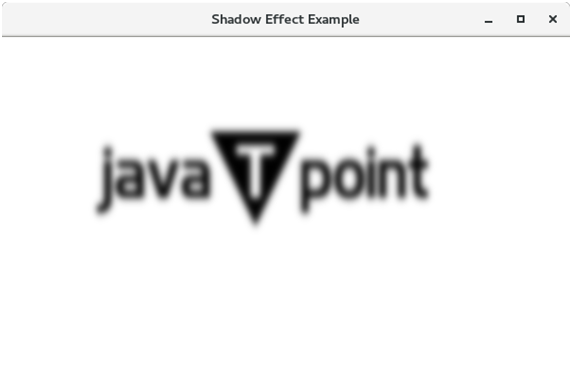
Aquest efecte és similar a aquest efecte d’ombra. No obstant això, en DropShadow, el duplicat del node es mostra darrere del node original amb la grandària i color especificats. La classe javafx.scene.effect.DropShadow representa l’efecte DropShadow. Només necessitem crear una instància d’aquesta classe per a generar un efecte apropiat.
Propietats
Constructors
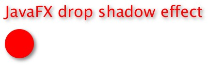
Fer que l’ombra paral·lela siga massa ampla li dóna a l’element l’aparença de pesadesa. El color de l’ombra ha de ser realista, generalment uns tons més clars que el color de fons. Si té diversos objectes amb ombres paral·leles, oriente l’ombra paral·lela de la mateixa manera per a tots els objectes. Una ombra paral·lela dóna l’aparença d’una llum que prové d’una direcció i projecta una ombra sobre els objectes.
En aplicar aquest efecte al node, l’ombra es mostra dins de les vores del node. La classe javafx.scene.effect.InnerShadow representa l’efecte InnerShadow. Només necessitem crear una instància d’aquesta classe per a generar un efecte apropiat.
Propietats
- **setBlurType(BlurType value)**: Això representa l'algorisme utilitzat per a difuminar l'ombra.
- **setChoke(Double value)**: Aquesta propietat és de tipus doble. Això representa l'escanyament de l'ombra.
- **setColor(Color value)**: El color del kernel de desenfocament d'ombra. Aquesta propietat és de tipus de color.
- **setHeight(Double value)**: Representa l'altura del kernel de difuminat d'ombres. Aquesta propietat és de tipus doble.
- **setInput(Effect value)**: Això representa l'entrada per a l'efecte.
- **setOffsetX(Double value)**: Això representa la coordenada X del desplaçament d'ombra. Això pròpiament és de tipus doble.
- **setOffsetY(Double value)**: Això representa la coordenada I del desplaçament d'ombra. Aquesta propietat és de tipus doble.
- **setRadius(Double value)**: Representa el radi del kernel de difuminat d'ombres.
- **setWidth(double value)**: Representa l'ample del kernel de difuminat d'ombres.
Constructors
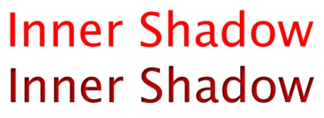
Aquest efecte s’utilitza per a il·luminar un node des d’una font de llum. Hi ha diversos tipus de fonts de llum, és a dir, puntuals, distants i puntuals. La classe javafx.scene.effect.Lighting representa l’efecte d’il·luminació. Necessitem crear una instància d’aquesta classe per a generar un efecte apropiat en el node.
Propietats
- **setBumpInput(Effect value)**: És una propietat de tipus d'objecte d'efecte. Representa l'entrada del mapa de relleu per a l'efecte.
- **setContentInput(Effect value)**: És una propietat de tipus d'objecte Effect. Representa l'entrada de contingut per a l'efecte.
- **setDiffuseConstant(Double value)**: És una propietat de tipus Double. Representa la constant difusa.
- **setLight(Light value)**: És una propietat de tipus d'objecte Light. Representa la font de llum de l'efecte.
- **setSpecularConstant(double value)**: És una propietat de tipus doble. Representa la constant especular.
- **setSpecularExponent(double value)**: És una propietat de tipus doble. Representa l'exponent especular.
- **setSurfaceScale(double value)**: És una propietat de tipus doble. Representa l'escala de superfície de la llum.
Constructors
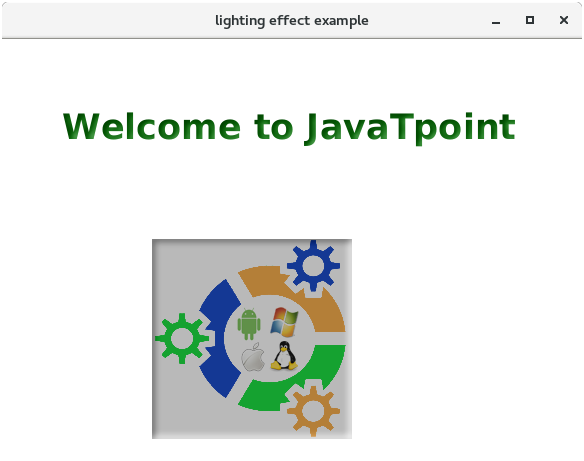
En aquest efecte, el node s’il·lumina des d’una font de llum distant. La font de llum distant és la que es manté a una distància considerable de l’objecte i la llum s’atenua en una direcció des de la font fins a l’objecte. En JavaFX, la classe javafx.scene.effect.Light.Distant representa la font de llum distant. Necessitem crear una instància d’aquesta classe per a generar la llum adequada en el node.
Propietats
Constructors

Aquest efecte il·lumina el node mitjançant una font de llum puntual. La font de llum puntual és aquella la llum de la qual s’atenua en totes les direccions. La intensitat de la font de llum depén de la distància entre la font de llum i el node. La classe javafx.scene.effect.Light.Espot representa aquest efecte. Només necessitem crear una instància d’aquesta classe per a generar la llum adequada en el node.
Propietats
- **setPointsAtX(double value)**: Aquesta és una propietat de tipus doble. Representa la coordenada X del vector de direcció de la llum
- **setPointsAtY(double value)**: Aquesta és una propietat de tipus doble. Representa la coordenada I del vector de direcció de la llum
- **setPointsAtZ(double value)**: Aquesta és una propietat de tipus doble. Representa la coordenada Z del vector de direcció de la llum.
- **setSpecularExponent(double value)**: Aquesta és una propietat de tipus doble. Representa el component especulatiu. S'utilitza per a alterar l'enfocament de la font de llum.
Constructors

En aquest efecte d’il·luminació, la font de llum rep una determinada posició en l’espai 3D. Com suggereix el nom, la font de llum està situada en un punt determinat i els nodes estan units per a il·luminar-se des d’aqueixa font en particular. La classe javafx.scene.effect.Light.Point representa aquesta font de llum. Necessitem crear una instància d’aquesta classe per a generar la il·luminació adequada en el node.
Propietats
Constructors
L’efecte de perspectiva crea un efecte tridimensional d’un altre objecte bidimensional.

Una transformació de perspectiva pot assignar qualsevol quadrat a un altre quadrat, al mateix temps que conserva la rectitud de les línies. A diferència de les transformacions afins, el paral·lelisme de les línies en la font no es conserva necessàriament en l’eixida.
Aquest efecte no ajusta les coordenades dels esdeveniments d’entrada ni cap mètode que mesure la contenció en un node. El clic del mouse i els mètodes de contenció no estan definits si s’aplica un efecte de perspectiva a un node.
Les coodenades per al effecte de perspectiva, són:

En general, la Reflexió es pot definir com el canvi de direcció. JavaFX ens permet generar l’efecte de reflexió en qualsevol node. L’efecte de reflexió bàsicament agrega la reflexió del node a la seua part inferior. Està representat per la classe javafx.scene.effect.Reflection. Només necessitem crear una instància d’aquesta classe per a aplicar l’efecte apropiat a un node.
Propietats
Constructors
La reflexió d’un node amb un efecte de reflexió no respondrà als esdeveniments del mouse ni als mètodes de contenció en el node.
L’efecte SepiaTone bàsicament canvia el to de la imatge al color marró vermellós. En JavaFX, la classe javafx.scene.effect.SepiaTone representa l’efecte SepiaTone. Només necessitem crear una instància d’aquesta classe per a generar un efecte apropiat.
Propietats
Constructors
Alguns dels efectes tenen una propietat d’entrada que pot usar per a crear una cadena d’efectes. La cadena d’efectes pot ser una estructura en forma d’arbre, perquè alguns efectes tenen dues entrades i altres no.
En la Figura, l’efecte de reflexió s’usa com una entrada per a l’efecte d’ombra paral·lela, la qual cosa significa que primer el rectangle es reflecteix per l’efecte de reflexió i després l’efecte d’ombra paral·lela s’aplica al resultat.
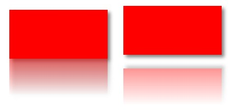